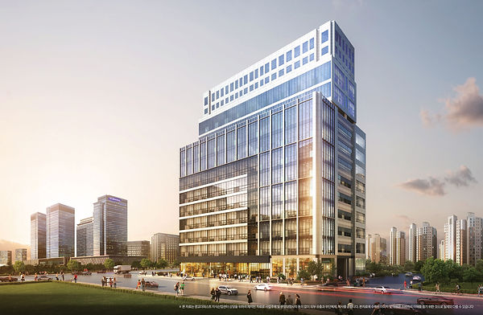
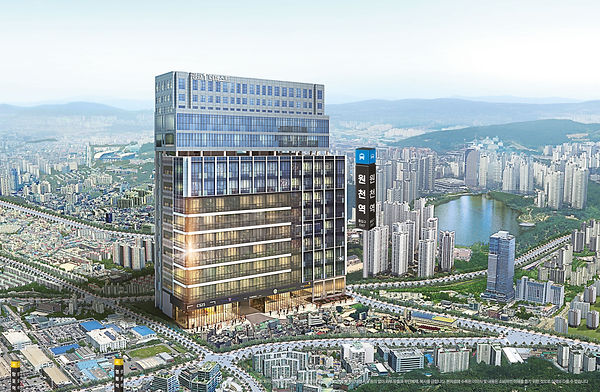
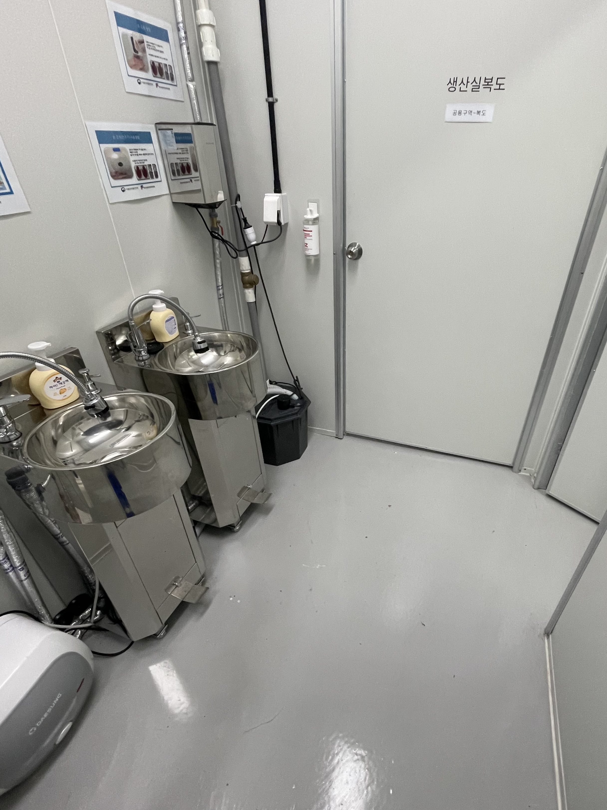
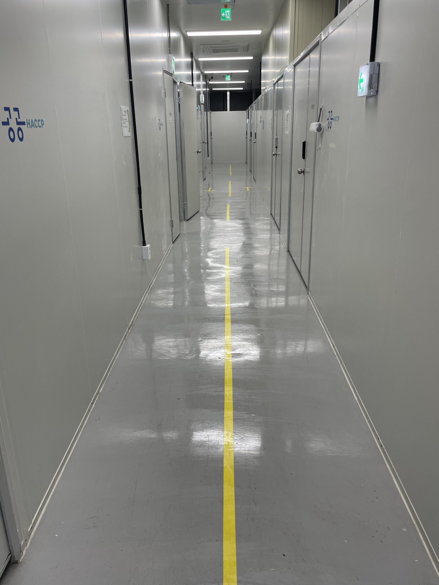
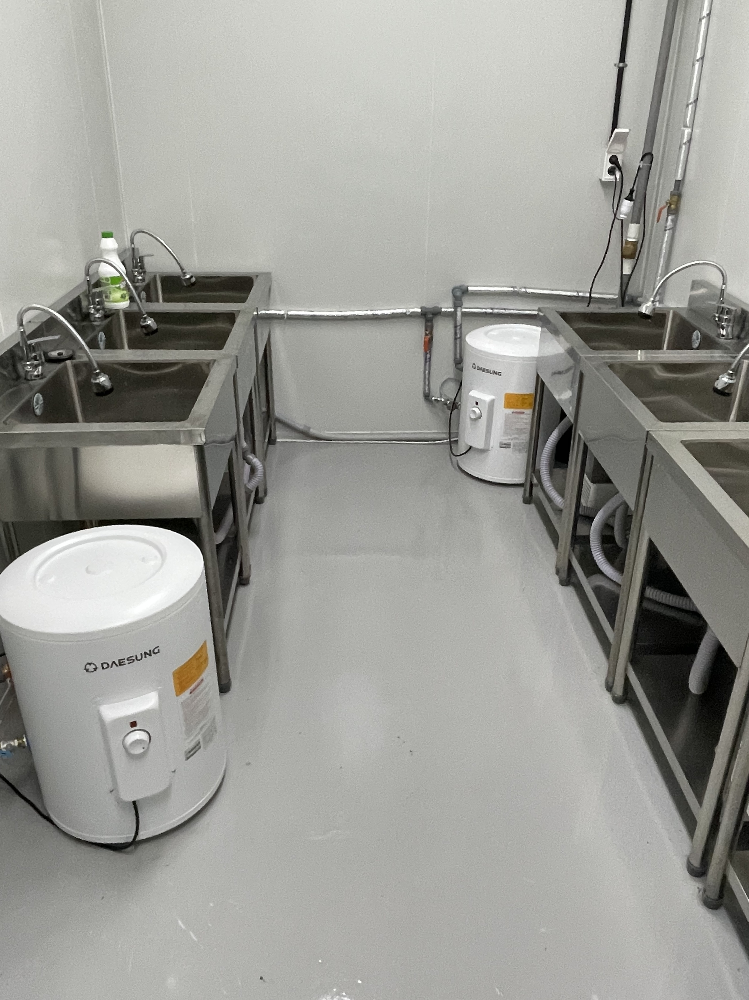
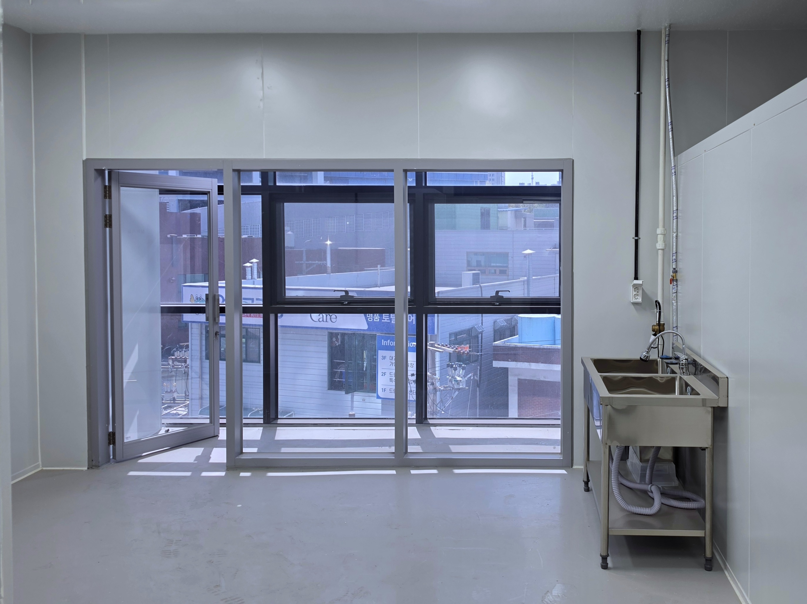
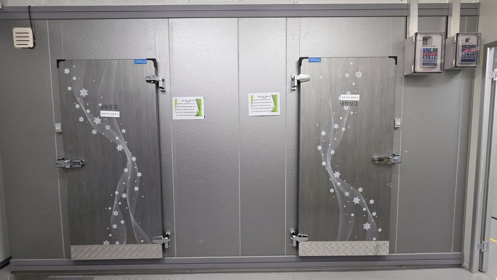
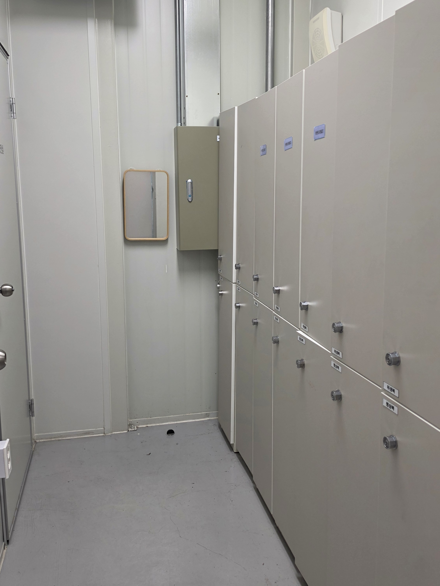
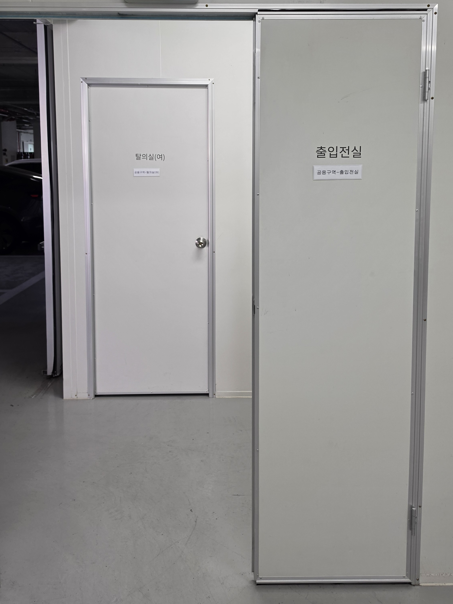
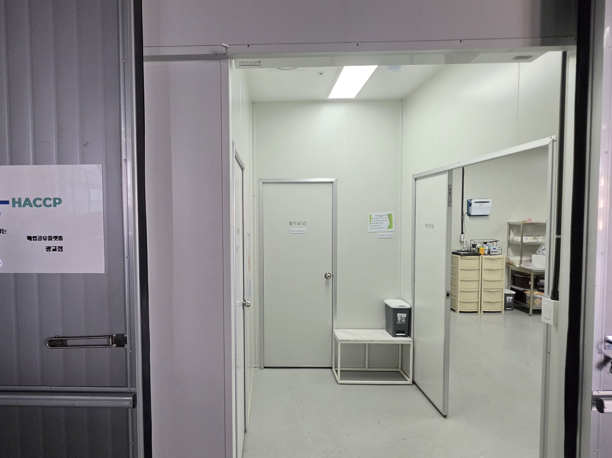

POST HACCP
식품 제조 창업과 HACCP 준비를 더 현실적으로 시작하세요
포스트공공해썹은 광교점과 구리점 등 운영 지점의 마케팅과 입점 상담을 총괄하며, HACCP 기반 공유형 제조시설과 운영 지원 체계를 바탕으로 중소 식품업체와 브랜드가 제조를 시작하고 인증을 준비할 수 있도록 돕습니다.
- 광교점·구리점 운영
- HACCP 준비 지원
- 전문 행정사 협업 연계
- 복수 지점 상담 가능



[광교점] 광교 더 퍼스트 지식산업센터 3층 소재
경기도 수원시 영통구 매영로 159번길 19, 3층 302~306호 (원천동)
공간
HACCP 기준을 고려한 제조 인프라 검토
준비
입점 전후 인증 준비 항목 정리
협업
전문 행정사 협업 체계로 진행 지원
운영
기록관리와 운영 정착 흐름 안내
WHY IT FEELS HARD
왜 HACCP 준비는 늘 어렵게 느껴질까요?
대부분의 중소 식품업체는 인증 그 자체보다도, 준비 과정 전체가 보이지 않는다는 점에서 더 큰 부담을 느낍니다.
시설 부담
기준에 맞는 공간과 설비를 처음부터 준비해야 할 것 같아 시작이 막막합니다.
절차 부담
서류, 기준서, 대응 절차를 누가 어디까지 챙겨야 하는지 감이 잘 오지 않습니다.
운영 부담
인증 이후에도 기록관리와 유지관리까지 계속 이어질까 봐 걱정됩니다.
CURRENT BRANCHES
현재 운영 중인 지점은 광교점과 구리점입니다
포스트공공해썹은 현재 광교점과 구리점의 마케팅과 입점 상담을 총괄하고 있으며, 이후 추가 지점도 같은 구조로 확장될 수 있도록 구성하고 있습니다.
OPERATING MODEL
포스트공공해썹은 HACCP 진입의 부담을 나누어 해결합니다
포스트공공해썹은 공간, 준비, 협업, 운영을 하나의 흐름으로 연결해 입점 기업이 혼자 모든 문제를 풀어야 하는 상황을 줄이는 데 초점을 맞춥니다. 각 운영 지점의 마케팅, 상담 유입, 준비 연계를 통합적으로 안내합니다.
공유형 제조 인프라
HACCP 기준을 고려한 공간과 운영 환경을 바탕으로 제조 시작 가능성을 먼저 검토합니다.
인증 준비 지원
입점 기업이 혼자 준비하지 않도록 필요한 인증 준비 항목과 진행 순서를 단계별로 정리합니다.
전문 행정사 협업
HACCP 인증 진행은 전문 행정사 협업 체계를 통해 연결하고 전체 흐름을 관리합니다.
운영 관리 연계
입점 후 기록관리와 운영 정착까지 이어지는 실무 흐름을 함께 안내합니다.
GWANGGYO FACILITY

위생전실

생산실 복도

습식 전처리실

생산실 내부 (7.8평)

냉동 냉장 창고

탈의실

출입구

주출입구
WHAT WE DO
포스트공공해썹은 무엇을 직접 하고, 무엇을 연계하나요?
직접 수행
- 입점 상담 및 적합성 검토
- 지점별 공간 안내
- 운영 연계 및 실무 커뮤니케이션
- 입점사 지원과 진행 관리
협업 수행
- HACCP 인증 행정 지원
- 서류 및 절차 대응
- 전문 행정사 협업 연계
- 인증 진행 단계별 안내
포스트공공해썹은 입점 기업의 제조 시작과 운영 정착을 지원하며, HACCP 인증은 전문 행정사 협업 체계를 통해 준비 단계부터 진행까지 연결합니다.
WHO IT FITS
이런 업체에 포스트공공해썹 모델이 잘 맞습니다
세부 적합성은 품목, 생산 공정, 인증 시점에 따라 달라질 수 있으므로 광교점 또는 구리점 기준으로 상담을 통해 확인합니다.
식품 제조 스타트업
제조를 처음 시작하지만 HACCP 기반 생산 체계를 검토해야 하는 팀
소규모 브랜드
자체 공장 구축 부담 없이 제조 가능성을 테스트하고 싶은 브랜드
중소 식품업체
HACCP 진입이 필요한데 내부 실무 인력과 경험이 부족한 업체
운영 전환 검토 기업
공간, 인증, 운영을 개별 발주보다 통합 흐름으로 검토하고 싶은 경우
PROCESS
입점부터 인증 준비까지 이렇게 진행됩니다
-
상담 신청
업종과 생산 계획, 인증 필요 여부를 먼저 확인합니다.
-
운영 거점 적합성 검토
품목과 공정 기준으로 광교점 또는 구리점에서의 가능성을 검토합니다.
-
입점 조건 안내
운영 방식과 준비 범위를 설명하고 필요한 항목을 정리합니다.
-
HACCP 준비 구조 설계
준비 단계, 필요한 자료, 대응 흐름을 단계별로 잡습니다.
-
전문 행정사 협업 연계
인증 진행은 전문 행정사 협업 체계를 통해 이어집니다.
-
운영 정착 지원
입점 후 운영과 기록관리 흐름까지 함께 안내합니다.
FAQ
상담 전 자주 묻는 질문
어떤 업체가 입점할 수 있나요?
품목과 생산 공정에 따라 적합성이 달라집니다. 상담을 통해 관심 지점 기준의 가능성을 먼저 확인합니다.
HACCP 인증을 꼭 바로 받아야 하나요?
사업 단계와 유통 계획에 따라 우선순위가 달라질 수 있습니다. 포스트공공해썹은 준비 시점과 절차를 함께 검토합니다.
포스트공공해썹이 인증을 직접 진행하나요?
입점과 운영 연계는 포스트공공해썹이 담당하고, HACCP 인증 진행은 전문 행정사 협업 체계를 통해 지원합니다.
입점 후 운영 관리는 어떻게 지원되나요?
입점 후 기록관리와 운영 정착 흐름을 포함해 필요한 실무 지원 구조를 안내합니다.
상담 후 바로 입점이 가능한가요?
가능 여부는 업종, 일정, 현재 공간 상황에 따라 달라질 수 있으므로 상담 후 구체적으로 안내드립니다.
CONTACT
입점이 가능한지 먼저 확인해보세요
업종, 생산 방식, 인증 필요 여부에 따라 준비 방법은 달라집니다. 기본 정보를 남겨주시면 선택한 지점 기준으로 어떤 방식으로 시작할 수 있는지 안내해드립니다.